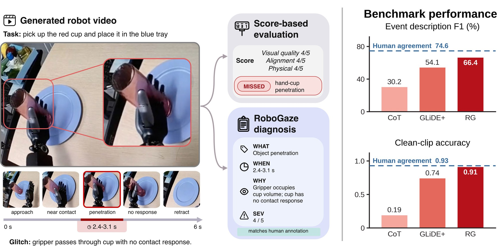
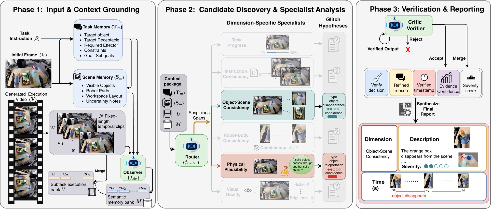
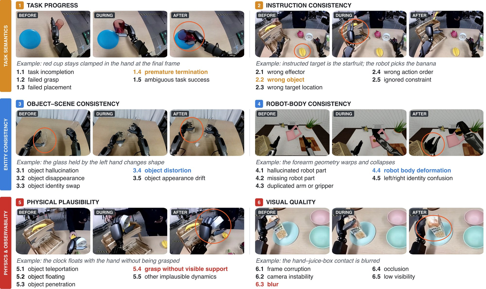
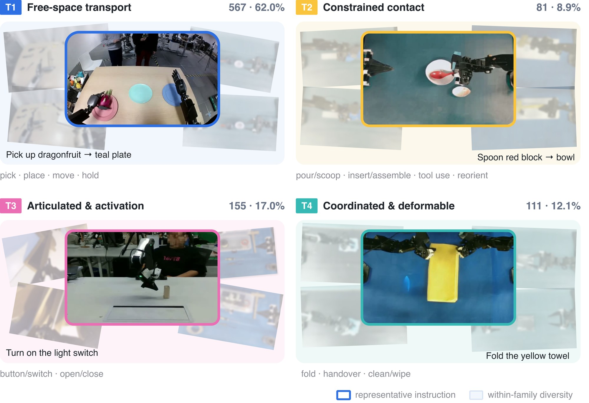
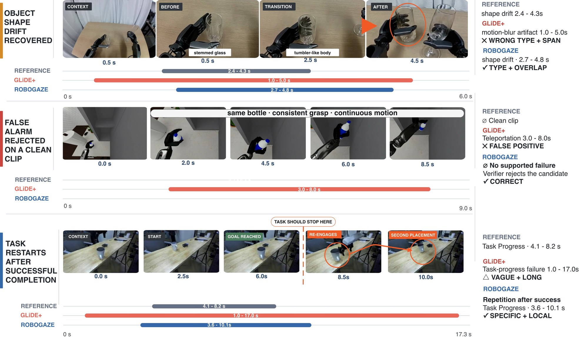
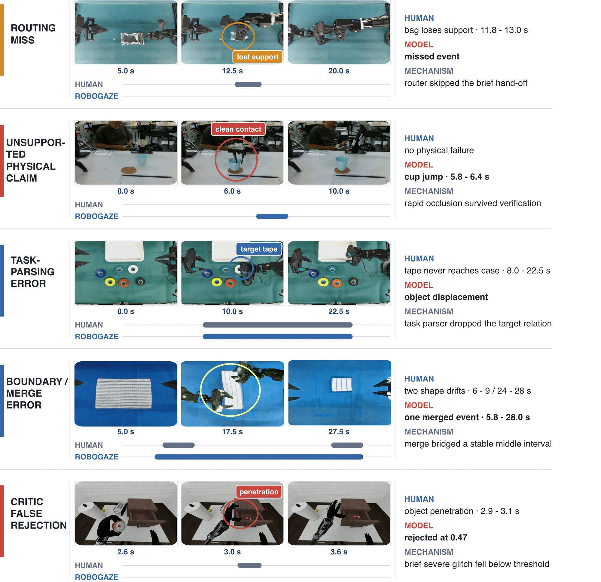

Research Project
A generated robot video can look convincing and still contain the one error that matters: a hand passing through a cup for a fraction of a second. RoboGaze turns frozen vision-language models into diagnosticians that report what failed, when, why and how severely. It needs no training.

From scalar judgment to grounded diagnosis. Left: VideoScore2, a learned score-based judge, rates the clip 4/5 on visual quality, alignment and physical consistency, with no indication of what failed or when. RoboGaze identifies the hand–cup penetration, localizes it to 2.4–3.1 s, explains the supporting evidence and grades its severity. Right: RoboGaze compared with evaluators that do report events (CoT and GLiDE+), using Gemini 3.1 Pro on all 914 clips. RoboGaze has higher description F1 and clean-clip accuracy than both. Dashed lines mark human agreement on the 180-clip gold subset.
Abstract
Robot world models now generate synthetic manipulation videos, but evaluating them is hard. Realistic-looking outputs often violate physical laws, temporal consistency or task logic, and conventional metrics and monolithic VLM judges return scores that do not say what failed. We present RoboGaze, a training-free multi-agent VLM evaluator. It grounds the task and scene, routes each subtask to dimension-specific specialists, and uses a critic to verify their findings. The output is a temporally localized diagnostic report that states what failed, when, why and how severely, under a schema of 6 dimensions and 30 failure types whose annotation reliability and coverage we measure.
To benchmark it, we introduce RoboGazeBench: 914 human-annotated clips from five generators, conditioned on simulated and real-world data and running from 4.9 to 148.9 s. RoboGaze outperforms every baseline on all eight open-source and proprietary VLM backbones. Even a published agentic detector, given the same schema and a slightly larger inference budget, trails it by 10.1–12.3 description-F1 points, and blinded human raters confirm the margin. The advantage is largest on held-out generators and long clips, and it carries over to selecting generated demonstrations.
+11.3
F1 over the strongest control
mean of 8 backbones, 95% CI [10.2, 12.4]; GLiDE with our schema
17% → 85%
clean-clip accuracy
empty reports on 210 failure-free clips, CoT vs. RoboGaze
83%
of the gap to humans closed
CoT → human agreement, Gemini 3.1 Pro, gold subset
.80 vs .71
demonstration-screening precision
usable clips kept in the top half, human-labelled
See it work
Pick a generated clip below. The panel beside the video is its structured report: failure dimension, type, time span and description for every event. Each event is also marked on the timeline. Click an event to loop exactly that moment. The ten featured clips span three robot embodiments and lengths from 5.8 to 142 seconds, and two of them contain no failure at all: for those, the correct report is an empty one. More examples are available below.
Method
Given a task instruction, an optional initial scene observation and a generated execution video, RoboGaze returns a set of failure events. Each event has a type, a time span, its reasoning and evidence, and a severity. Every role is a separate prompt to the same frozen VLM, so RoboGaze needs no training and works with any backbone.

The RoboGaze framework. A three-phase pipeline for diagnosing generated videos. (1) Extract task and scene context memories. (2) Route suspicious temporal spans to six dimension-specific specialists, which generate failure hypotheses. (3) Verify the hypotheses and synthesize them into a final structured diagnostic report.
RoboGazeBench
Prior benchmarks judge a clip as a whole. RoboGazeBench annotates every visible failure from scratch, with a temporal span, a severity and a free-text description. It therefore tests whether an evaluator finds the right failure at the right time, not only whether it rates a clip as good or bad. Every clip is generated, and its clips have the longest horizon of any comparable evaluation set.
Five generators, four generation mechanisms
Fine-tuned one-shot
Cosmos-Predict2.5
14B, fine-tuned per task · humanoid
Segment-conditioned
DreamGen
Cosmos-Predict2 2B · all three embodiments
Autoregressive
DreamDojo
action-conditioned DiT 2B · all three embodiments
General-purpose I2V
Wan 2.2 · Veo
independent architectures, no robot training

The failure schema: 3 groups × 2 dimensions × 5 types. Task semantics asks whether the video performs the right task. Entity consistency asks whether the objects and the robot persist coherently. Physics & observability asks whether the result is physically supportable and visually decidable. Each panel shows one unmodified benchmark event, and its type is highlighted. Three types record that the frames cannot decide rather than asserting a defect, so abstention is explicit.

Four task families. Free-space transport (567), constrained contact (81), articulated & activation (155) and coordinated & deformable (111).
Results
RQ1Does structured diagnosis beat strong evaluators?
RoboGazeBench is hard. With chain-of-thought prompting, no backbone exceeds 30.2 description F1. Even GLiDE+ (the published GLiDE detector given our schema and rubric) stays 20.5 F1 below human agreement on the strongest backbone. RoboGaze is best on every metric and every backbone. Averaged over the eight backbones, F1 rises from 23.5 (CoT) and 46.0 (GLiDE+) to 57.3. The paired gain of +11.3 [10.2, 12.4] stays between +10.1 and +12.3 on every backbone, although the backbones themselves span 18.3 points.
Core results
| Backbone | Desc. F1 | Clean RG | ||
|---|---|---|---|---|
| CoT | G+ | RG | ||
Compact view. Expand the full table for mIoU and F1×IoU.
| Family | Backbone | Desc. F1 ↑ | mIoU ↑ | F1×IoU ↑ | Clean ↑ | ||||||||
|---|---|---|---|---|---|---|---|---|---|---|---|---|---|
| CoT | G+ | RGOurs | CoT | G+ | RGOurs | CoT | G+ | RGOurs | CoT | G+ | RGOurs | ||
The widest separation is on clean clips.
A VLM prompted to look for failures tends to report them even when none occurred. On the 210 failure-free clips, where no language judge is involved, CoT returns an empty report 17% of the time, GLiDE+ 68% and RoboGaze 85% (91% on Gemini 3.1 Pro). On the gold subset, RoboGaze on Gemini 3.1 Pro recovers 83% of the distance between CoT and human agreement in description F1 (GLiDE+ recovers 55%) and 99% of it in clean accuracy. The remaining gap is concentrated in Physical Plausibility and Visual Quality, and it tracks inter-annotator agreement across the six dimensions (ρ = −.94). Part of the ceiling therefore reflects what sampled RGB frames can settle, not the evaluator.
RQ2Where does the gain come from?
A gain over direct prompting has three cheaper explanations than ours: the evaluator was told more, it spent more inference, or any agentic loop would have done as well. We control for each. A single call given everything RoboGaze is told (B1) closes 49% of the F1 gap, but its clean accuracy stays at .58: the schema tells the model what counts as a failure, not whether the frames show one. Nine self-consistent samples (B2) and a generic propose-and-verify loop (B3) add little. GLiDE+ (B4b) is the strongest control and closes 68% of the gap, yet at comparable cost RoboGaze still leads it by 11.4 F1 and .17 clean accuracy.
Gemma4-31B, all 914 clips. Each control closes part of the F1 gap, but none matches RoboGaze on clean clips. Hover over a bar for the method's calls and seconds per clip.
Grounding and routing find events; the critic removes false ones.
Removing task and scene memory or the router costs 6.8 and 5.1 F1. Removing the critic costs 13.2 F1 and collapses clean accuracy from .86 to .21, yet it is the only removal that raises severe-event recall. So the critic is not simply muting reports: it filters false ones while keeping the failures that matter. The ordering holds across critic thresholds from .30 to .70.
| Configuration | F1 | Sev-R | Clean |
|---|---|---|---|
| RoboGaze | 57.3 | .91 | .86 |
| w/o task & scene memory | 50.5 | .86 | .79 |
| w/o candidate router | 52.2 | .87 | .82 |
| w/o critic verifier | 44.1 | .94 | .21 |
RQ3Does it hold beyond the development conditions?
Both methods score lower on Wan 2.2 and Veo, which were held out when prompts and thresholds were chosen, but GLiDE+ loses more. The gain there is +12.4 and +13.0 F1, against +11.3 overall. It also rises monotonically with clip length, from +10.2 below fifteen seconds to +16.6 above eighty. In clips longer than forty seconds, sixteen uniformly sampled frames skip 68% of reference events, while RoboGaze reads the clip window by window.
(a) Paired F1 gain over GLiDE+ by generator, with 95% intervals. Shaded bars are held-out generators.
(b) Description F1 by clip duration, pooled over eight backbones.
The reports also select better demonstrations.
In this test, each of 40 conditions outside the benchmark was rendered six times, and every evaluator ranked the six candidates. Blind annotators labelled each candidate usable or not. RoboGaze keeps usable clips in its top half at .80 precision, against .71 for GLiDE+, .65 for VideoScore2 and .62 for RBench. It also halves the severe failures that survive the cut (.05 against .11).
Usable precision at 50% retention (P@50) against blind human labels. Random selection gives .49, the rate of usable clips; a perfect ranker would reach .98.
A report is a set of typed, time-stamped events, so it is scored event by event with the open-ended protocol of GLiDE, whose glitch reports have the same form. A fixed LLM judge (Gemini 3.1 Pro, temperature 0, r = .79 with human ratings) rates the similarity Sij ∈ [0,1] of a predicted and a reference description. Hungarian assignment then pairs events one-to-one by similarity × temporal overlap IoUt.
Description F1 asks what failed. Precision and recall sum Sij over matched pairs and divide by the number of predicted and reference events respectively, so an invented event lowers precision and a missed one lowers recall. mIoU asks when: it is the mean overlap of matched spans. F1×IoU asks both, crediting each match by Sij · IoUt. Two judge-free metrics score what the schema adds. Clean accuracy is the fraction of the 210 failure-free clips given an empty report. Sev-R is the fraction of severity-4/5 reference events recovered.
Every method runs on the same eight frozen VLMs: four proprietary and four open-weight (8–38B). The visual input is fixed per backbone and shared by all methods, so effects are compared within a backbone. Intervals are paired 95% bootstrap intervals over source conditions.
Qualitative

Three cases against the human reference. Top: a stemmed glass drifts into a tumbler. GLiDE+ calls it a motion-blur artifact spanning most of the clip. RoboGaze names the object distortion (shape drift) at 2.7–4.8 s, overlapping the reference 2.4–4.3 s. Middle: on a clean clip (same bottle, consistent grasp, continuous motion), GLiDE+ reports a failure. RoboGaze's verifier rejects the unsupported teleportation candidate and returns an empty report. Bottom: the task restarts after it has been completed successfully. Both methods detect the restart, but RoboGaze gives a more specific diagnosis and a tighter span, close to the reference 4.1–8.2 s; GLiDE+ covers almost the whole clip.
What it still gets wrong.
Each residual error traces back to one stage of the pipeline. The five mechanisms below are illustrated with one representative case each; the paper reports how residual errors are distributed on the gold subset. RoboGaze reports visible failures only: an empty report is not evidence that a behaviour is physically executable, and it does not replace human oversight before real-robot use.
Routing miss
A brief hand-off is never routed to a specialist.
Unsupported physical claim
Rapid occlusion survives verification as a jump.
Task-parsing error
The parser drops the target relation.
Boundary / merge error
A merge bridges two events across a stable middle interval.
Critic false rejection
A brief severe glitch falls below the threshold.
